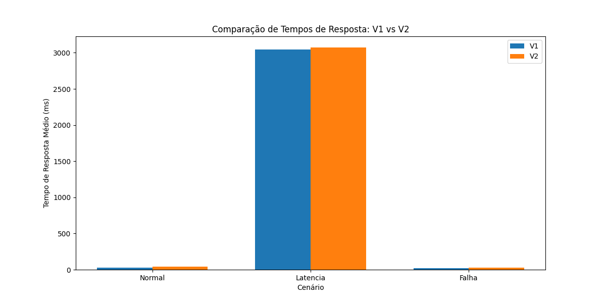

Relatório de Análise de Performance: Circuit Breaker
Resumo dos Tempos de Resposta
| version | scenario | avg_response_time | p95_response_time | min_response_time | max_response_time | total_requests | success_count | fallback_count | http_5xx_count | other_error_count | success_rate | fallback_rate | error_rate | http_5xx_rate | |
|---|---|---|---|---|---|---|---|---|---|---|---|---|---|---|---|
| 0 | V1 | Normal | 26.785169 | 52.029846 | 1.809167 | 378.346458 | 2950 | 2950 | 0 | 0 | 0 | 100.0 | 0.0 | 0.0 | 0.0 |
| 1 | V1 | Latencia | 3044.643744 | 3108.782112 | 3003.651793 | 3114.983002 | 750 | 750 | 0 | 0 | 0 | 100.0 | 0.0 | 0.0 | 0.0 |
| 2 | V1 | Falha | 21.567327 | 56.982079 | 1.720042 | 149.135208 | 2950 | 0 | 0 | 2950 | 0 | 0.0 | 0.0 | 100.0 | 100.0 |
| 3 | V2 | Normal | 44.166537 | 157.568352 | 4.362834 | 416.043958 | 2900 | 2900 | 0 | 0 | 0 | 100.0 | 0.0 | 0.0 | 0.0 |
| 4 | V2 | Latencia | 3073.200305 | 3128.428241 | 3018.570709 | 3139.981876 | 750 | 750 | 0 | 0 | 0 | 100.0 | 0.0 | 0.0 | 0.0 |
| 5 | V2 | Falha | 24.501516 | 89.161233 | 0.975833 | 247.764167 | 2950 | 0 | 2950 | 0 | 0 | 0.0 | 100.0 | 0.0 | 0.0 |
Análise Estatística
| scenario | p_value | effect_size | significant_difference | |
|---|---|---|---|---|
| 0 | Normal | NaN | inf | False |
| 1 | Latencia | NaN | inf | False |
| 2 | Falha | NaN | inf | False |
Gráficos Comparativos
